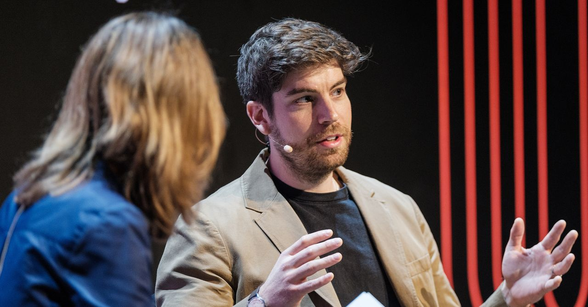
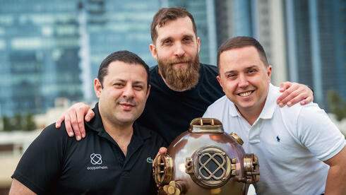
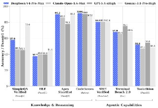
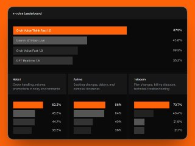
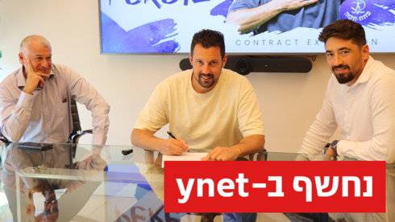

WIREDנמוכה25.04.2026, 00:00
Tim Cook was a great CEO, but he didn’t crack AI. It’s job number 1 for John Ternus.
אימות 1
Tim Cook was a great CEO, but he didn’t crack AI. It’s job number 1 for John Ternus.

Isomorphic Labs president Max Jaderberg said at WIRED Health in London that the startup has built a “broad and exciting pipeline of new medicines.”

חברת Copperhelm גייסה 7 מיליון דולר בסבב סיד בהובלת TLV Partners. החברה מפתחת סוכני AI אוטונומיים לניטור ותיקון איומי סייבר בענן בזמן אמת.

The cyber capabilities of AI models have experts rattled. AI’s social skills may be just as dangerous.
OpenAI השיקה את GPT-5.5, מודל המציג שיפור משמעותי במשימות מורכבות כגון כתיבת קוד, מחקר וניתוח נתונים. המודל עוקף את מתחריו במספר פרמטרים וכבר זמין למשתמשי Plus, Pro, Business ו-Enterprise.

חברת OpenAI שחררה בשקט בגרסת קוד פתוח כלי למניעת הדלפת נתונים עבור בינה מלאכותית 😨 בפלטפורמת Hugging Face פורסם ה-Privacy Filter — מודל שמזהה ומסיר פרטים אישיים מהטקסט לפני שאתם
קודקס הגיע ל-4 מיליון משתמשים פעילים, עם צפי לאיפוס מגבלות השימוש בשעות הקרובות. במקביל, נשמעים דיווחים לא מאומתים על שחרור GPT 5.5 ביום חמישי, יחד עם אפשרות לבניית סוכנים הפועלים באופן רציף.

ה. לפי הפרסום, הרעיון הוא שאפשר לסמוך עליו יותר גם בעבודות קשות וממושכות, עם פחות צורך לפקח עליו כל רגע.

גאון כלשהו פיתח בינה מלאכותית שמרוויחה כסף מדיווחים לרשות המיסים — ה-AI מנטר רשתות חברתיות ומאתר הודאות אקראיות של משתמשים על אי-תשלום מסים 🤖💸.

השתמשתי בקלוד אופוס 4.7 + מודל התמונות החדש של GPT כדי ליצור קרוסלה לאינסטגרם עם הסיפור קורע הלב של הופ, הצ׳יטה מהמדבריום בבאר שבע, שעברה התעללות בגיל צעיר באירלנד וחיה היום בישראל
ייצור לכם תוכן מוכן לפרסום לסושיאל עם צילומי מסך מהאפליקציה. (קישור שותפים) אם אתם לא טכניים ומחפשים את המקום הכי פשוט להתחיל לבנות עם AI - בייס44 זה המקום. בינה מלאכותית בטלגרם -
הפוסט מנוסח בצורה שיווקית ומנופחת. העובדות שכדאי לקחת ממנו הן: נכנס לראיון בחדשות 12 כשקלוד אופוס 4.6 הוא המודל המוביל, יוצא מהראיון כשקלוד אופוס 4.7 הושק (יותר טוב בקוד וכו) 🤯 תקופה משוגעת.

ך הכל, מתוכם 49 מיליארד פעילים (MoE). לפי הצהרת המפתחים, המודל מתחרה במודלים הסגורים המובילים בעולם.
זמין כעת בסדרת 3.0. הוא פותח עבור מסכים גדולים והפקות באיכות גבוהה, עם עקביות ויזואלית חזקה בנושאים, טקסטים, סגנון ותאורה.
משתמשים ברשת Twitter ריכזו את כל הפיצ'רים החדשים של GPT Image 2. אלו הנקודות המרכזיות, מודל הבינה המלאכותית למד ליצור: תמונות ב-360 מעלות גרידים של כרטיסיות בעיצוב מרשים עיתונים

חברת xAI השיקה את Grok Voice Think Fast 1.0, מודל קולי המיועד למענה מהיר ומדויק בתרחישים מורכבים ודיאלוגים דינמיים. המודל הגיע למקום הראשון במבחן הביצועים Tau Voice Bench ומפגין עמידות גבוהה לרעשי רקע ומבטאים שונים.

OpenAI תקיים היום ב-22:00 שידור חי.

OpenAI וגוגל משחררות פלטפורמות לעסקים לבניית סוכני בינה מלאכותית, המחוברים לכלים ולמידע ופועלים ברצף (24/7).

הפוסט מנוסח בצורה שיווקית ומנופחת. העובדות שכדאי לקחת ממנו הן: זה כבר לא נורמלי. יצרתי סקיל חדש לעיצוב בסגנון שאני אוהב והנחיתי את קלוד להשתמש ב-Hyperframes, שזה כלי חדש שמאפשר ליצור סרטונים ע"י קוד, מה שאומר שקלוד יכול
הפוסט מנוסח בצורה שיווקית ומנופחת. העובדות שכדאי לקחת ממנו הן: קלוד קו-וורק מתחבר למערכת הפרסום של פייסבוק - וזה משנה את הכל! בואו תראו למה קלוד קו-וורק פשוט משנה את הכל. מדובר בכלי שהוא מהפכה, לא פחות.
השקת בוט בינה מלאכותית חדש המבוסס על מודל מתקדם בטלגרם.

תראו מי הגיע להדליק משואה 😎 יוצר: אביתר רוזנברג חג עצמאות שמח 🇮🇱 בינה מלאכותית בטלגרם - https://t.me/AI_tg_il

הפוסט מציג טענת "חינם", אבל בלי אימות ברור מול המוצר הרשמי, ולכן צריך לראות בזה טענה שדורשת בדיקה.

הפוסט מציג טענת "חינם", אבל בלי אימות ברור מול המוצר הרשמי, ולכן צריך לראות בזה טענה שדורשת בדיקה.

הפוסט מציג טענת "חינם", אבל בלי אימות ברור מול המוצר הרשמי, ולכן צריך לראות בזה טענה שדורשת בדיקה.
הניסוח הזהיר יותר הוא: מצרים וסעודיה מקדמות, בתיאום עם ארה"ב ואיראן, מתווה להסכם אי-תוקפנות בלבנון שיכלול נסיגה ישראלית לגבול ונסיגת חיזבאללה אל מעבר לנהר הליטאני.
רה"מ זומן לתת את עדותו במסגרת פרשות ה"בילד" ופרשת "הפגישה הלילית", עדות שצפויה להיות קצרה וטכנית. המשטרה פנתה מספר פעמים ללשכת ראש הממשלה בניסיון לתאם את העדות - אך טרם נענתה
הניסוח הזהיר יותר הוא: על פי דיווחים לבנוניים, השליח הסעודי בביירות העביר מסרים בפגישותיו עם בכירים במדינה במוקד: המלצה שלא למהר במגעים עם ישראל ולשמור על הדרגתיות ועמדה מאוחדת בנוסף, בריאד בוחנים
הפוסט מנוסח בצורה שיווקית ומנופחת. העובדות שכדאי לקחת ממנו הן: סוכנות הידיעות "תסנים" המקורבת למשמרות המהפכה: "הדיווחים על מו"מ הם סיפורים שקריים של האמריקנים" במקביל, ממשל טראמפ הטיל סנקציות על ענקית פטרוכימיה סינית ועל
הניסוח הזהיר יותר הוא: סגן ראש ממשלת לבנון קרא לאסור פעילות צבאית מחוץ למסגרת המדינה, לצד דרישות לפירוק נשק חיזבאללה.
It would also reassign some of Satoshi Nakamoto’s coins to early users. Why? To fund development on the new blockchain.
The DOJ alleges a master sergeant profited from nonpublic government information. Gannon Ken Van Dyke allegedly made over $400,000 betting on the ouster of Venezuelan President

In March, Indiana imposed a ban on the machines, which federal authorities have identified as a vector committing fraud against the elderly.
הפוסט מציג טענת "חינם", אבל בלי אימות ברור מול המוצר הרשמי, ולכן צריך לראות בזה טענה שדורשת בדיקה.

Two papers published this week have reignited debates about the risk posed by “Q-day” to the cryptography that underpins digital assets.

המאמן שהוביל את העולה החדשה לליגת העל ולפלייאוף העליון היה מבוקש בקבוצות גדולות - ובחר להישאר בכחול. המחיר: ויתור על סעיף היציאה.

המאמן עומר פרץ האריך את חוזהו בהפועל פתח תקווה עד שנת 2028.